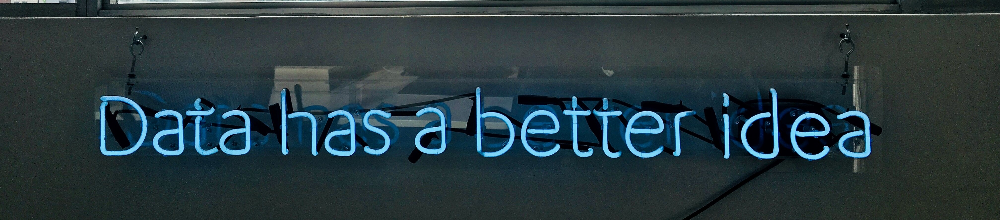

Resume

Skills
Technical
Coding Languages: Python, C++, R
Database Management: SQL (PostgreSQL, SQLite, Microsoft SQL), NoSQL (Couch, MongoDB, Elastic), Graph (Cayley, Neo4J), Vector (Milvus, Chroma)
Cloud Providers: AWS, Azure, GCP
Machine Learning: scikit-learn, MLFlow, SageMaker, Watson Studio
Distributed Computing: Spark and Hadoop
Finite Element Analysis: Ansys
Version Control: Git, GitHub, GitLab, BitBucket
Model and Simulation: MatLab, Maple, Mathematica
Computer Aided Drafting: SolidWorks
Design of Experiments: JMP, Python, R
Materials Science: Structural, Mechanical, Thermal, Optical, and Ultrasonic Measurement Techniques
Geospatial and Analytical Tools: ArcGIS, Tableau
Solution Architecture and Simulation: NoMagic, Lucid, Visio
Project Management: JIRA, Confluence, RedMine
Soft Skills
Team and Project Leadership
Strategic Roadmapping and Project Planning
Team Coaching and Mentorship
Business Development and Marketing
Technology Scouting
Scientific Communication: Technical and Non-Technical Presentation, Microsoft Office, LaTeX
Experience
ManTech International - Data and Analytics Lead; Dec 2023 - Present Expression Networks - Chief Engineer; Jan 2023 - Dec 2023 BigBear.ai - Vice President of Technology and Principal Data Scientist; Aug 2021 - Jan 2023 Institute for Defense Analyses - Technical Lead and Data Scientist; Apr 2017 - Aug 2021 Los Alamos National Laboratory - Research Scientist; Mar 2014 - Mar 2017 University of Edinburgh - Research Scientist; Mar 2012 - Mar 2014 Stony Brook University - Postdoctoral Researcher; Apr 2011 - Mar 2012 University of Nevada, Las Vegas - Graduate Research and Teaching Assistant; Aug 2004 - Apr 2011 Oregon State University - Undergraduate Research and Teaching Assistant; Jun 2001 - Jun 2004 Commercial Furniture Distributors - Temporary Furniture Installer; May 2004 - Aug 2004
Binyon's Eye Center - Lab Technician; Aug 2002 - Jan 2004
VisionWorks - Lab Technician; Aug 2000 - Aug 2002
The Oregonian - Newpaper Delivery Driver; Apr 2003 - Aug 2004
Taco Bell - Crew Member; Aug 1998 - Aug 2000
Westfield Public Library - Page; Jun 1996 - Jul 1998
Education
Formal Education
Master of Business Administration - University of Maryland Global Campus
Doctor of Philosophy - Physics - University of Nevada, Las Vegas
Master of Science - Physics - University of Nevada, Las Vegas
Bachelor of Science - Physics; Minor in Mathematics - Oregon State University
Self-Directed Education
Project Management Institute Project Management Professional Google Data Analytics Professional Google IT Automation with Python Professional CompTIA Security+ ce IBM Advanced Data Science Specialist IBM Data Science Professional
A list of my current publications is also available
Published Papers
Experimental Melting Curve of Zirconium Metal to 37 GPa; Journal of Physics: Condensed Matter; Journal of Physics: Condensed Matter 32, 355402. Shear-driven instability in zirconium at high pressure and temperature and its relationship to phase-boundary behaviors; Physical Review B 95(13), 134010. High pressure elasticity and thermal properties of depleted uranium; Journal of Applied Physics 119(16), 165904. High pressure and temperature equation of state and spectroscopic study of CeO2; Journal of Physics: Condensed Matter 28, 155401. Pressure-induced kinetics of the alpha to omega transition in zirconium; Journal of Applied Physics 118, 025902. A finite-element study of sapphire anvils for increased sample volumes; High Pressure Research 35, 148-161. User of an advanced composite material in construction of a high pressure cell for magnetic ac susceptibility measurements; High Pressure Research 34, 371-384. Enhancement of thermoelectric performance with pressure in Ce0.8Fe3CoSb12.1; Journal of Physics of Chemistry of Solids 75(9), 1017-1023. Structural phase stability in nanocrystalline titanium to 161 GPa; Materials Research Express 1, 035044. High-pressure cell for neutron diffraction with in situ pressure control at cryogenic temperatures; Review of Scientific Instruments 85(4), 043904. Sound velocities of PbTe to 14 GPA: evidence for coupling between acoustic and optic phonons; Journal of Physics: Condensed Matter 25(36), 365402. High pressure structural and transport measurements of InTe, GaTe, and InGaTe2; Journal of Physics and Chemistry of Solids 74(5), 723-728. High pressure transport characteristics of Bi2Te3, Sb2Te3, BiSbTe3; Journal of Physics and Chemistry of Solids 73, 1154-1158. Measurement setup for the simultaneous determination of diffusivity and Seebeck coefficient in a multi-anvil apparatus; Review of Scientific Instruments 83, 093903. Transport Properties of Ni and PbTe under pressure; Journal of Electronic Materials 41(4), 633-638. Structural Phase Transitions and Thermoelectric Properties of AgPb18SbTe20 under compression; Journal of Electronic Materials 39(9), 1828-1831. High Pressure Structural Studies on SrRuO3; Journal of Physics and Chemistry of Solids 69(9), 2237-2239. Magnetic Ordering in UCu2Si2 at high pressure; Physica B: Condensed Matter 403(5), 940-942. High Pressure X-Ray Diffraction Studies of Bi(2-x)Sb(x)Te3 (x=0,1,2); AIP Conference Proceedings 955(1), 171-174. AC Susceptibility Studies of the weak itinerant ferromagnet SrRuO3 uner high pressure to 34 GPa; Physical Review B 76(1), 014432. Containment system for experiments on radiactive and hazardous materials in a Paris-Edinburgh Press; Review of Scientific Instruments 86(11), 113904
Articles Contributed To
Command Post Computing Environment - Annual Report to US Congress 2021 Electronic Warfare Planning and Management Tool - Annual Report to US Congress 2021 Integrated Visual Augmentation System - Annual Report to US Congress 2020 Integrated Tactical Network - Annual Report to US Congress 2020 Command Post Computing Environment - Annual Report to US Congress 2019 Mounted Computing Environment - Annual Report to US Congress 2019 Army Network Modernization - Annual Report to US Congress 2019
ManTech International
Role: Data and Analytics Lead
Managed data and analytics service development, roadmap, and technical implementation, focusing on analytics, data engineering, data science, process automation, and system optimization capabilities in support of multi-network convergence effort.
Responsibilities
Lead a team of 10 staff
Identify stakeholder requirements and plans
Control team performance and financial obligations and reporting to management and stakeholders
Establish rapport between internal and external cross-functional teams
Architect and develop targeted AI/ML enabled solutions to deliver clients transformational technology
Notable Outcomes
Developed multiple prototype systems for classifying documents automatically, reducing manual involvement by 60%
Participated and led technical submissions for multiple project proposals, successfully bringing in $10M in funding
Leveraged technical roadmapping skill to align team efforts and boost productivity by 200%
Expression Networks
Role: Chief Engineer
Managed corporate-wide technical architecture, infrastructure, software engineering, test, and cybersecurity activities multiple clients
Responsibilities
Develop and align technology strategy and corporate roadmap for technical architecture and engineering/test/cybersecurity standards
Identify and lead technical business development efforts to grow corporate client base
Build and mentor 80+ person technical team
Establish matrix team strategy and ensure appropriate technical staffing on all projects
Cultivate relationship with client stakeholders to promote requirements gathering and enthusiasm around solution effort
Provide expert consultative advise and analysis to support decision making processes for corporate and client technology investments
Notable Outcomes
Led the development of an integrated course of action assessment prototype, resulting in multiple client callbacks for requests for information
Improved client opinions of corporate operations, leading to improved engagement between staff and stakeholders
Employed product owner skillset in Agile environment to lead a team of 8 interns in the development of a web application with integrated finance and analytics capabilities for a charitable organization
BigBear.ai
Role: Vice President of Analytics Technology and Principal Data Scientist
Established and led innovation center laboratory and managed technology and staffing aspects of sector delivery projects
Responsibilities
Develop and maintain technology strategy and roadmap for sector operations
Establish, staff, and operate innovation center solutions laboratory for supporting prototype and business development
Implement performance management and mentorship programs for 150+ sector staff
Cultivate relationship with client stakeholders, identifying pain points and supporting technical product delivery
Provide front-line data science support for multiple projects
Engage staff in internal project awareness campaign to increase knowledge of technology employed
Serve as primary decision maker and assessor for business development opportunities and technology partnerships
Conduct regular presentations on campaign status and objectives to executive leadership team to gain buy in
Notable Outcomes
Developed and integrated workflow process automation, business process automation, and natural language processing techniques to reduce results generation by 90% with 75% less staff involvement
Envisioned and developed multiple successful technical proposals, generating $55M in new revenue across four opportunities
Piloted the incorporation of synthetic data in the training of AI/ML technologies, enabling rapid client use and positive press for capability
Participated in successful win of AI ANTX competition for predictive modeling capability
Institute for Defense Analyses
Role: Technical Lead and Data Scientist
Led consultative assessment teams supporting multiple technical development projects
Responsibilities
Provide expert analytical and technical advice to client and third-party stakeholder senior and executive management
Develop technical assessment strategy and roadmaps for rigorous system development and testing
Design and implement analysis toolsets for gathering and processing performance, usability, and cybersecurity data
Conduct external stakeholder outreach to maintain collaborative partnerships and establish new relations
Communicate project status to technical and non-technical decision makers to support planning and reporting obligations
Notable Outcomes
Developed and leveraged comprehensive technical data aggregation and analysis solution, reducing test data needs and saving $10M in collection costs
Identified and engaged potential development partners to implement Agile development processes, reducing develoment time by 10%
Provided effective project performance information to executive decision makers to support project budget needs, maintaining consistent funding levels
Los Alamos National Laboratory
Role: Research Scientist
Managed cross-functional materials science research and technology development laboratory
Responsibilities
Envision and execute targeted research programs aligned to organization objectives
Design and implement novel experimental instruments and analysis toolsets
Analyze data and prepare publications on research for peer-reviewed publication
Maintain relationships with funding agencies to direct future research
Communicate results to technical and non-technical audiences
Notable Outcomes
Developed multiple new instrumentation tools for use in central-user research facilities
Delivered 2-4 research publications per year, increasing laboratory output by 200%
Awarded Seaborg Fellowship with value of $2M over three years for novel materials research
University of Edinburgh
Role: Research Scientist and Course Instructor for Engineering Design
Managed novel instrumentation development and research laboratory and instructed engineering design course
Responsibilities
Conduct engineering research into new instrumentation technologies and techniques
Manage 10-20 member team consisting of postdoctoral scholars, graduate students, and undergraduate students
Design and implement novel research approaches to materials science
Develop and leverage data collection and analysis capabilities in support of research objectives
Support operations of user facilities within the Center for Science at Extreme Conditions campus
Instruct second-year course on integrated design process, including drafting, engineering assessment, and requirements identification
Communicate research findings to technical and non-technical audiences
Notable Outcomes
Deployed three new instrumentation setups, expanding scope of research capabilities available to users
Mentored multiple student projects, resulting in successful project/thesis defenses
Streamlined experimental schedules and approaches, increasing user capacity by 10% at on-site research facilities
Stony Brook University
Role: Postdoctoral Research Associate
Managed instrumentation development, materials research, and integration projects
Responsibilities
Design and implement novel measurement techniques for geologic materials, both at on-site facilities and at central user facilities
Conduct materials science research projects in support of laboratory objectives
Mentor graduate student researchers participating in laboratory
Communicate research findings to technical and non-technical audiences
Notable Outcomes (beyond those noted for other positions)
Developed comprehensive instrumentation approach for measurement and analysis of material properties
Fully automated measurement process for conducting materials experiments on large-volume press apparatus
University of Nevada - Las Vegas
Role: Graduate Research and Teaching Assistant
Managed instrumentation development, materials research, integration projects, and laboratory operations across multiple sites
Responsibilities
Develop and implement novel experimentation setups for charactizing materials
Conduct materials science research in support of laboratory objectives
Manage day-to-day laboratory operations and schedules for measurement systems
Instruct multiple laboratory and lecture courses for a wide range of students
Organize summer and undergraduate student events for laboratory group
Notable Outcomes (beyond those noted for other positions)
Developed automated experimentation process for conducting materials research
Produced multiple peer-reviewed publications and presentations
Served as graduate student representative for Physics and Astronomy department for four years
Obtained six competitve grants to fund ongoing research
Implemented inventory and asset tracking system to manage laboratory resources, reducing down time by 15%
Expanded laboratory capacity and experiment capabilities with four new experimental capabilities
Oregon State University
Role: Undergraduate Research and Teaching Assistant
Conducted independent materials research projects and aided in the instruction of undergraduate courses
Responsibilities
Conduct and manage laboratory research projects
Develop and implement analysis packages for processing research data
Provide regular teaching assistant support for classes and office hours
Communicate research findings to technical and non-technical audiences
Notable Outcomes
Obtained competitive multi-year university research grant to fund research efforts
Implemented analytics dashboard to depict research results
Projects
Some of the projects I have had the privilege of being involved with include:
The development of a data ecosystem to support law enforcement efforts, at Expression as partners to GovCIO
Technical development and project ownership of the Ursa Solution while at BigBear.ai, leading to Digital Horizons
Technical development and project ownership of the US SOUTHCOM CSO SCOUT solution while at BigBear.ai
Technical design and implementation of process automation and AI/ML aspects of the US Army's Global Force Information Management solution, enabling rapid analytics and AI/ML components
Data science development and implementation in support of BigBear.ai's win at the NAVWAR AI ANTX Challenge
For some other projects I supported, led, or was involved with before, check out my Publications page or my GitHub portfolio.
Photo by Luke Chesser on Unsplash